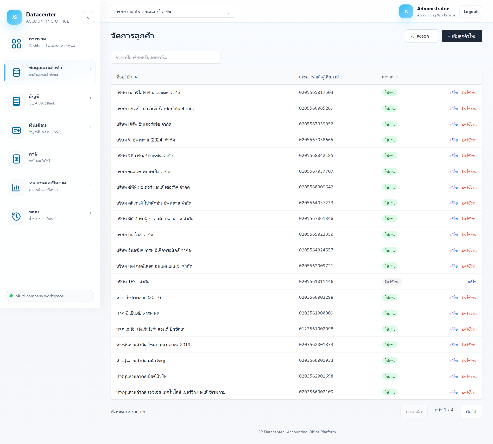

ลูกค้า
ทะเบียนบริษัทลูกค้าของสำนักงาน — ข้อมูลที่กรอกที่นี่ถูกใช้ต่อในงบการเงินและแบบภาษีทุกฉบับ (ชื่อบริษัท เลขผู้เสียภาษี รหัสสาขา ที่อยู่ รอบปีบัญชี เลขที่บัญชีนายจ้าง ปกส.)
ชื่อบริษัท เลขผู้เสียภาษี รหัสสาขา และที่อยู่ จะถูกพิมพ์ลงงบการเงิน ภ.ง.ด.50 ภ.พ.30 และ สปส.1-10 กรอกให้ตรงกับหนังสือรับรอง/ทะเบียนจริงเสมอ
1. การเข้าใช้งาน
เปิดเมนู ข้อมูลและนำเข้า → ลูกค้า (หน้านี้ไม่ขึ้นกับบริษัทที่เลือกอยู่ด้านบน — แสดงลูกค้าทุกรายที่คุณมีสิทธิ์เห็น)
2. หน้ารายชื่อลูกค้า

| ส่วนที่แสดง | หน้าที่ |
|---|---|
| ช่องค้นหา | พิมพ์ชื่อบริษัทหรือเลขภาษีเพื่อกรอง — ระบบค้นให้ทันทีไม่ต้องกด Enter |
| + เพิ่มลูกค้าใหม่ | เปิดฟอร์มสร้างลูกค้ารายใหม่ (ดูข้อ 3) |
| ส่งออก | ส่งออกรายชื่อลูกค้าเป็น Excel / CSV / PDF (แสดงเมื่อมีข้อมูล) |
คอลัมน์ในตาราง
| คอลัมน์ | ความหมาย |
|---|---|
| ชื่อบริษัท | ชื่อที่ใช้แสดงทั้งระบบ — กดหัวคอลัมน์เพื่อเรียงลำดับได้ |
| เลขประจำตัวผู้เสียภาษี | เลข 13 หลัก |
| สถานะ | ใช้งาน = ลูกค้าปัจจุบัน · ปิดใช้งาน = เลิกเป็นลูกค้าแล้ว |
| แก้ไข / ปิดใช้งาน | ปุ่มท้ายแถว (ดูข้อ 4) |
ตารางแสดงครั้งละ 20 รายชื่อ ใช้แถบเลขหน้าด้านล่างเลื่อนดูรายชื่อที่เหลือ หรือใช้ช่องค้นหาจะเร็วกว่าเมื่อมีลูกค้าจำนวนมาก
3. เพิ่มลูกค้าใหม่
กด + เพิ่มลูกค้าใหม่ ฟอร์มจะขอข้อมูลพื้นฐาน 6 ช่อง (ช่องที่มี * คือช่องบังคับ)
| ช่อง | คำอธิบาย |
|---|---|
| รหัสลูกค้า * | รหัสอ้างอิงของบริษัท เช่น ABC-001 — สำหรับลูกค้าที่มีข้อมูลใน Express
ต้องใช้ รหัสเดียวกับที่ Express ใช้ เพราะระบบใช้รหัสนี้จับคู่ตอนนำเข้าข้อมูล
ตั้งได้ครั้งเดียว แก้ทีหลังไม่ได้ |
| ชื่อบริษัท (ชื่อทางการสำหรับออกงบ) * | ชื่อเต็มตามหนังสือรับรอง ใช้พิมพ์ลงงบการเงินและแบบภาษี |
| เลขประจำตัวผู้เสียภาษี (13 หลัก) * | ตัวเลข 13 หลักของนิติบุคคล |
| รหัสสาขา (5 หลัก) * | สำนักงานใหญ่ใช้ 00000 · สาขาใช้เลขสาขาตามที่จดทะเบียนภาษีมูลค่าเพิ่ม |
| ที่อยู่ | ที่อยู่แบบข้อความยาว (แยกช่องย่อยได้ภายหลังในหน้าแก้ไข) |
| เดือนเริ่มต้นปีบัญชี * | เดือนแรกของรอบปีบัญชี — ส่วนใหญ่คือ มกราคม ตั้งให้ถูกเพราะมีผลกับการคำนวณงวดทุกรายงาน |
กด บันทึก เพื่อสร้าง หรือ ยกเลิก เพื่อกลับหน้ารายชื่อ
ข้อมูลสำหรับแบบภาษี (ประเภทกิจการ, ISIC, ปกส., อีเมล, ที่อยู่แยกช่อง) จะปรากฏใน หน้าแก้ไข เท่านั้น — สร้างลูกค้าให้เสร็จก่อน แล้วค่อยกด “แก้ไข” เพื่อเติมส่วนที่เหลือ
4. แก้ไขข้อมูลลูกค้า
กด แก้ไข ท้ายแถวของลูกค้า จะได้ฟอร์มเดียวกับตอนสร้าง แต่เพิ่มส่วนสำหรับแบบภาษีเข้ามา
ส่วนสำหรับ ภ.ง.ด.50
| ช่อง | คำอธิบาย |
|---|---|
| ประกอบกิจการ | ประเภทกิจการเป็นข้อความ เช่น “รับเหมาก่อสร้าง”, “ขายส่งวัสดุก่อสร้าง” |
| รหัส ISIC | รหัสประเภทธุรกิจ 6 หลักตามที่กรมสรรพากรกำหนด เช่น 522920 |
| อีเมลผู้ประกอบการ | อีเมลติดต่อที่ใช้ในแบบ ภ.ง.ด.50 |
เพราะเปลี่ยนได้รายปี จึงย้ายไปกรอกที่หน้า ภ.ง.ด.50 โดยแยกตามรอบปีบัญชี
ส่วนประกันสังคม (สำหรับ สปส.1-10)
| ช่อง | คำอธิบาย |
|---|---|
| เลขที่บัญชีนายจ้าง ปกส. (10 หลัก) | เลขที่นายจ้างที่ขึ้นทะเบียนกับสำนักงานประกันสังคม |
| ลำดับที่สาขา ปกส. (6 หลัก) | ลำดับสาขาตามทะเบียนประกันสังคม |
| โทรศัพท์ / รหัสไปรษณีย์ | ข้อมูลติดต่อที่ใช้ในแบบนำส่ง |
ที่อยู่แยกช่อง (สำหรับฟอร์มราชการ)
กดแถบ “ที่อยู่แยกช่อง (สำหรับฟอร์มราชการ เช่น ภ.ง.ด.50)” เพื่อกางช่องย่อย — อาคาร, ห้องเลขที่, ชั้นที่, หมู่บ้าน, เลขที่, หมู่ที่, ตรอก/ซอย, ถนน, ตำบล/แขวง, อำเภอ/เขต, จังหวัด
ช่องเหล่านี้ถูกแยกอัตโนมัติจากที่อยู่ตอนนำเข้าข้อมูล ให้ตรวจและแก้ให้ตรงกับทะเบียนจริง เพราะแบบราชการต้องกรอกแยกช่อง — ส่วนรหัสไปรษณีย์ใช้ช่องในส่วนประกันสังคมด้านบน
5. ชื่อบริษัท: ชื่อทางการ vs ชื่อจาก Express
ระบบเก็บชื่อไว้ 2 ชุด — ชื่อทางการ ที่คุณกรอกเอง (ใช้แสดงและออกงบ) กับ ชื่อที่ซิงก์มาจาก Express ถ้าสองชื่อไม่ตรงกัน หน้าแก้ไขจะขึ้นบรรทัดเล็กๆ ใต้ช่องชื่อว่า “ชื่อจาก Express: …” ให้เทียบดู
การนำเข้าข้อมูลรอบใหม่ จะไม่ทับชื่อทางการที่คุณตั้งไว้ — แก้ชื่อให้ถูกต้องแล้วอยู่ถาวร
6. ปิดใช้งานลูกค้า
เมื่อเลิกเป็นลูกค้า ให้กด ปิดใช้งาน ท้ายแถว ระบบจะถามยืนยันก่อน
ข้อมูลบัญชี งบการเงิน และหลักฐานทั้งหมด ยังอยู่ครบ ตรวจย้อนหลังได้ตามกฎหมาย เพียงแต่บริษัทจะไม่ขึ้นในช่องเลือกบริษัทและรายงานภาพรวมอีก
7. ปัญหาที่พบบ่อย
| อาการ | สาเหตุและวิธีแก้ |
|---|---|
| บันทึกไม่ผ่าน มีข้อความแดงใต้ช่อง | ข้อความนั้นบอกสาเหตุตรงๆ เช่น เลขภาษีไม่ครบ 13 หลัก หรือรหัสลูกค้าซ้ำกับที่มีอยู่ — แก้ตามที่แจ้งแล้วกดบันทึกใหม่ |
| แก้รหัสลูกค้าไม่ได้ (ช่องเป็นสีเทา) | รหัสลูกค้าล็อกหลังสร้างแล้ว เพราะผูกกับข้อมูลที่นำเข้าไว้ทั้งหมด ถ้าจำเป็นต้องเปลี่ยนให้ติดต่อผู้ดูแลระบบ |
| ลูกค้าใหม่ไม่ขึ้นในช่องเลือกบริษัทด้านบน | ตรวจว่าสถานะเป็น “ใช้งาน” และบัญชีผู้ใช้ของคุณได้รับสิทธิ์เข้าถึงบริษัทนั้นแล้ว |
| นำเข้าข้อมูลแล้วไม่พบข้อมูล Express | มักเกิดจากรหัสลูกค้าไม่ตรงกับรหัสใน Express — ตรวจรหัสให้ตรงกันก่อน |
เมื่อมีบริษัทลูกค้าในระบบแล้ว ขั้นต่อไปคือดึงข้อมูลบัญชีเข้ามาที่ นำเข้าข้อมูล →